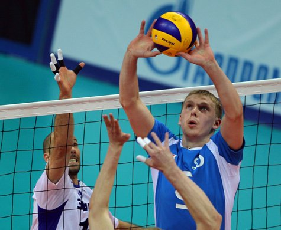
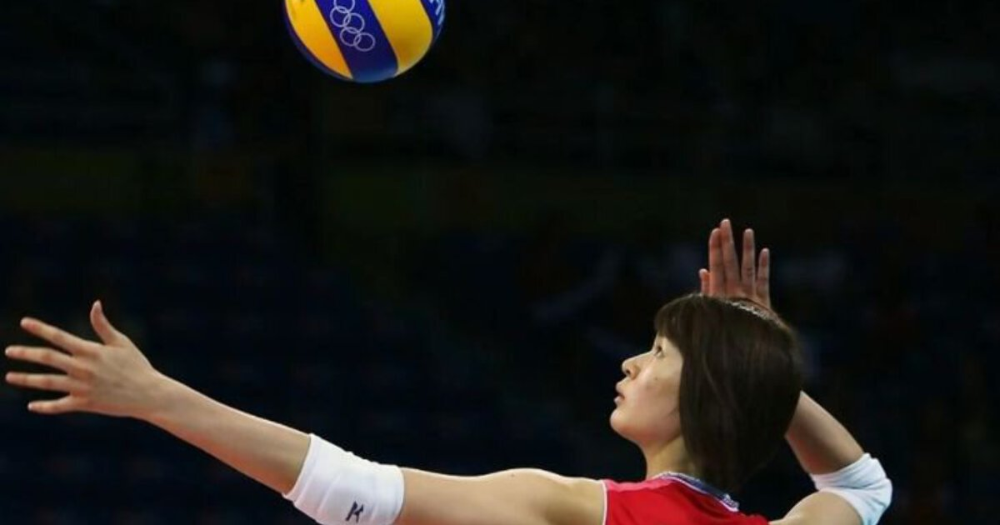

Верхняя передача
Верхняя передача в волейболе является одной из основных техник приема мяча и передачи его партнеру.
Хорошая верхняя передача требует от игрока хорошей координации и точности, чтобы мяч попал в нужное место на поле.
Верхняя передача часто используется для быстрых атак и контратак после приема подачи соперника.
Игроки волейбольной команды должны постоянно тренировать верхнюю передачу, чтобы она была максимально эффективной в игре.
Верхняя передача также может быть использована для контратаки и создания атаки собственной команды.
Нижняя передача
Нижняя передача в волейболе используется для точной передачи мяча на короткие дистанции.
Эта техника требует от игрока хорошей техники и силы, чтобы мяч достиг нужного игрока.
Нижняя передача обычно используется для приема подачи соперника или для передачи мяча своим нападающим.
Игрокам волейбольной команды необходимо постоянно тренировать нижнюю передачу, чтобы она была максимально точной и эффективной в игре.
Нижняя передача также может быть использована для подачи мяча своим нападающим, чтобы создать возможность для успешной атаки.

Подача
Подача в волейболе является одним из самых важных элементов игры, так как она начинает каждый розыгрыш.
Игрок, выполняющий подачу, должен иметь хорошую технику и сильный удар, чтобы мяч достиг нужной точки на поле соперника.
Существует несколько видов подач в волейболе, таких как верхняя, нижняя, боковая и прыжковая, каждая из которых имеет свои особенности и цели.
Подача может быть использована для создания возможности для успешной атаки, а также для принуждения соперника к ошибкам в приеме.
Игроки команды постоянно тренируют различные виды подач, чтобы быть максимально эффективными и предсказуемыми для соперников.